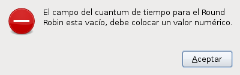
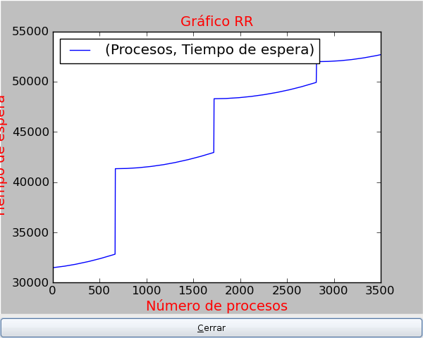

Simulador de planificación de procesos
La manera en como funciona el procesador corresponde a una serie de algoritmos que están descritos en el sistema operativo; esto genera un impacto teniendo en cuenta el tipo de computador y su uso especifico.
El simulador de planificación de procesos ‘-‘ Simuproc, utiliza los siguientes algoritmos:
- Primero en llegar primero en servirse(FCFS) - Fisrt-come, First-serverd.
- Menor tiempo primero(SJF) - Shortest Job First.
- planificación por turno rotatorio(RR) - Round Robin.
- Preemptive Shortest Job First (PSJF).
los algoritmos pueden ser simulados con las siguientes funciones:
- Constante.
- Uniforme.
- Exponencial.
- Normal.
Nota
La función “Uniforme” recive 2 valores, minímo y maxímo .
Subir al inicio del manual
Para poder ejecutar el Simuproc, debe tener las siguientes dependencias instaladas:
- python-imaging
- lshw
- GTK
- python-matplotlib
- python-symPy
- python-scipy
Subir al inicio del manual
Para ejecutar el programa, puede hacerlo de 2 formas:
- Abra un terminal/consola.
- Entrar a la carpeta “Simuproc”, escribiendo: cd simuproc
- Luego escribir: python simuproc.py
- Listo, debería haber abierto el programa.
- Abrir el navegador de archivos.
- Entrar en la carpeta “Simuproc”
- Seleccionar el archivo “simuproc.py y pulsar enter.
- Listo, debería haber abierto el programa.
Subir al inicio del manual
En esta ventana, le saldrá lo siguiente:
dandole la bienvenida al usuario.
Para continuar con el programa, presione el botón “Adelante”
En esta ventana le saldrá lo siguiente:
donde se le solicitarán los siguientes datos.
- Primero en llegar primero en servirse(FCFS) - Fisrt-come, First-serverd.
- Menor tiempo primero(SJF) - Shortest Job First.
- planificación por turno rotatorio(RR) - Round Robin.
- Preemptive Shortest Job First (PSJF).
marcando su casilla correspondiente, puede marcar varias si lo desea.
Nota
si ha seleccionado el algoritmo de Round Robin (RR), debe colocar en el cuadro de texto el valor del cuantum de tiempo, puede ser un valor entero o flotante.
Nota
para los flotantes, debe separar los decimales con un punto “.” (ej: 15.25)
Nota
si ha colocado un valor negativo, un caracter o un simbolo en alguno de los campos de texto, le saldrá un error como el siguiente:
el mensaje puede cambiar, según el tipo de error, el de la imagen es cuando se deja vacío un campo.
Para que el programa realice los calculos presione el botón “Adelante”.
Para ver las gráficas generadas, haga lo siguiente:
En la ventana de resultados, seleccione del cuadro combinado, la grafica del algoritmo que desea ver.
Presione el botón “Ver gráfica”, le saldrá una ventana como la siguiente:

Nota
se recomienda cerrar la ventana antes de ver otra gráfica.
Subir al inicio del manual
Para ver las simulaciones de los procesos según el algoritmo, haga lo siguiente:
En la ventana de resultados, seleccione del cuadro combinado, el algoritmo que desea simular.
Presione el botón “Ver Simulación”, le saldrá una ventana como la siguiente:
Nota
se recomienda esperar a que termine la simulación para cerrar la ventana y hacer otra simulación.
Nota
para la simulación se toman un maxímo de 10 procesos y el tiempo medio de espera
Subir al inicio del manual
Estas son las funciones de los diferentes botones que tiene la aplicación
- Botón Salir: permite al usuario cerrar el programa., al presionar el mismo, le saldrá un aviso como el siguiente:
¿Está seguro que desea salir del programa?
debe presionar “No” o “Sí”, para cerrar o no la aplicación.
Botón Acerca: le permite revisar quién desarrollo el programa, la versión, sitio web, entre otras, le saldrá una ventana como la siguiente:
Botón Atrás: permite ir a la ventana anterior a la que tiene el foco actualmente.
Botón Adelante: permite ir a la ventana siguiente de la que tiene el foco.
Botón Ver Gráfica: permite ver la gráfica del algoritmo seleccionado.
Botón Ver Simulación: permite ver una simulación del algoritmo seleccionado, como si se estuvieran ejecutando.
Subir al inicio del manual
El Simuproc genera en la carpeta “data”, según la selección del usuario, los siguientes archivos:
- FCFS.dat
- SJF.dat
- RR.dat
- PSJF.dat
los cuales contiene en cada columna:
- N: Número de procesos.
- T.E: Tiempo de espera.
- T.CPU: Tiempo de Uso del CPU.
- T.L: Tiempo de llegada.
los cuales pueden ayudar al usuario a una mejor interpretación de los resultados.
Subir al inicio del manual